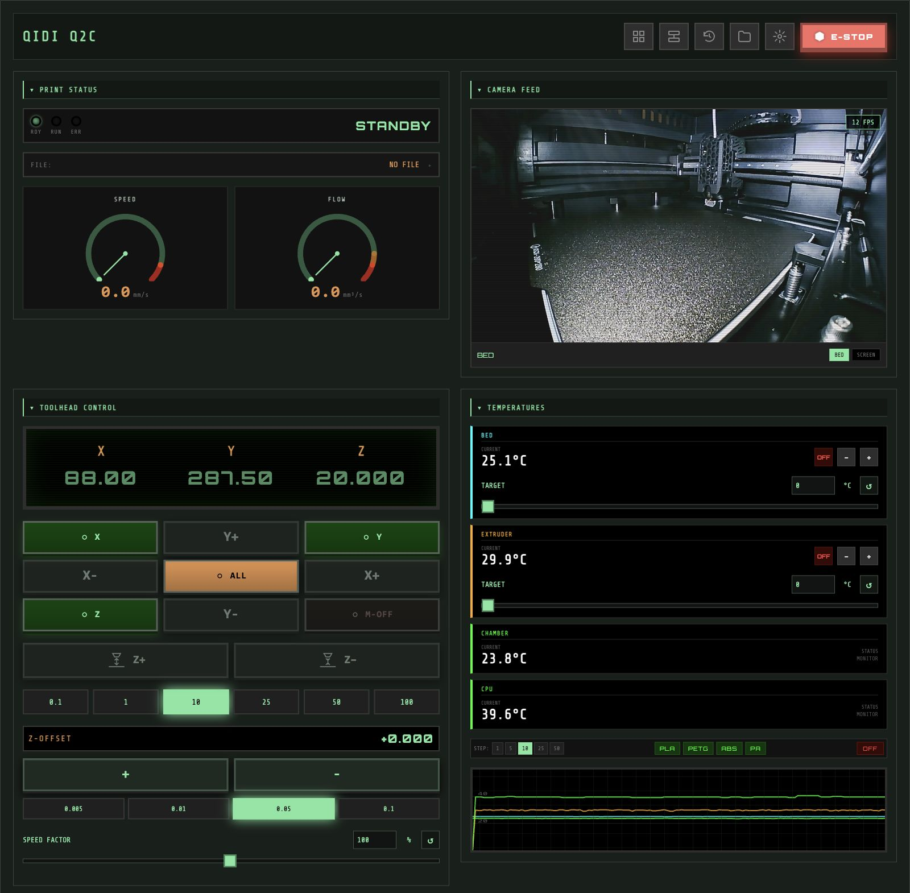
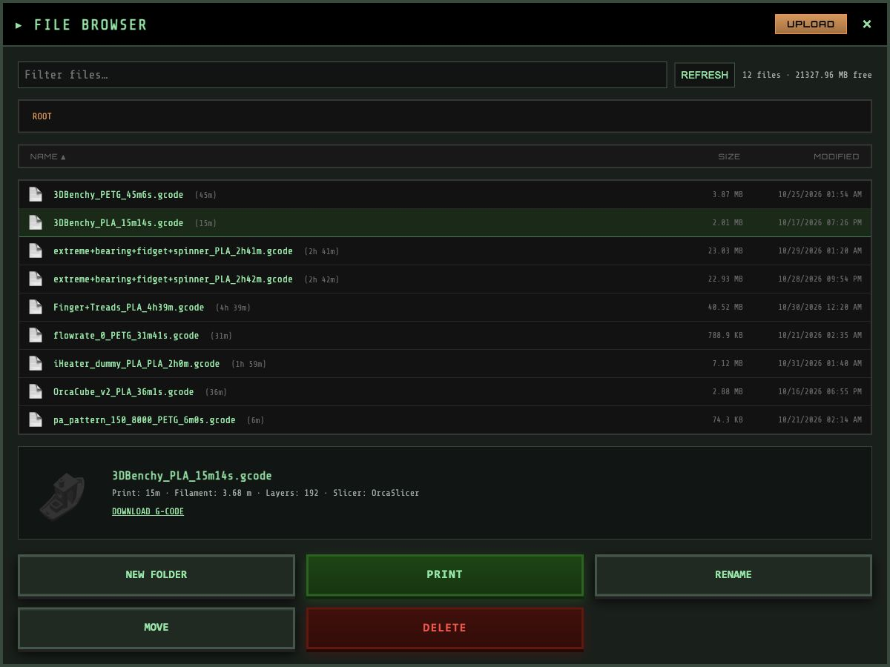
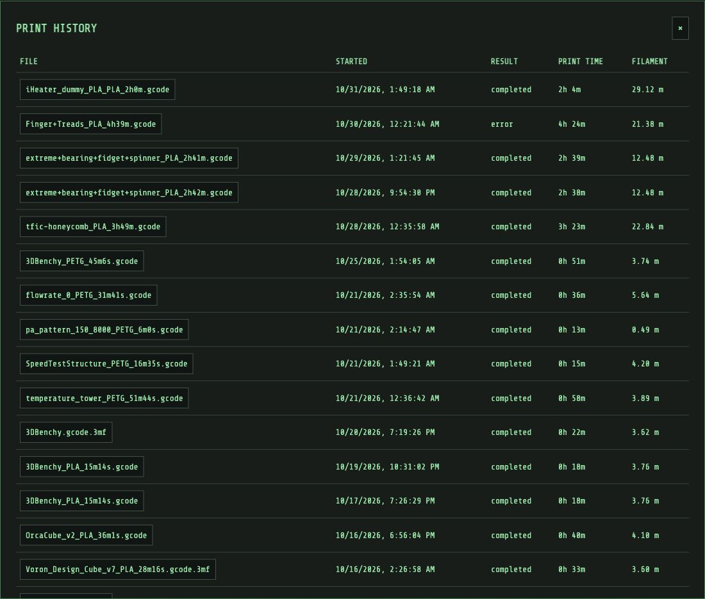
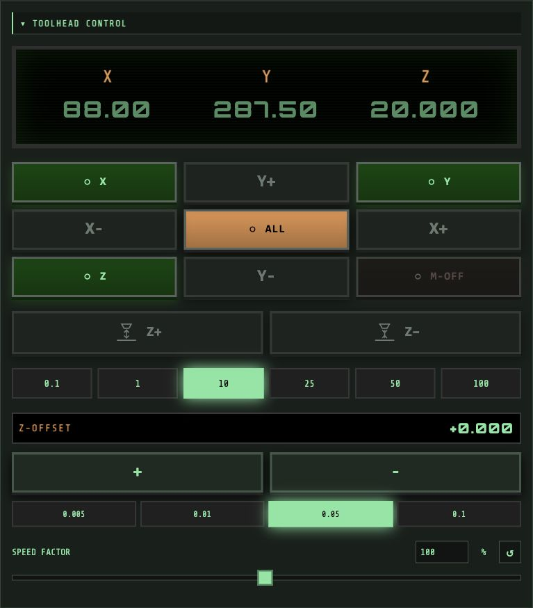
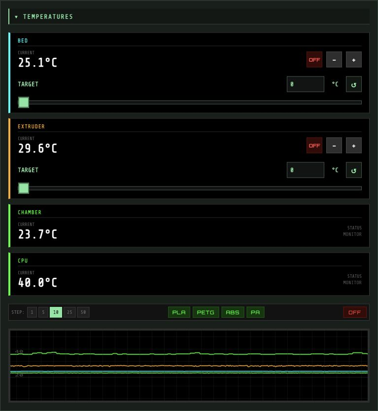
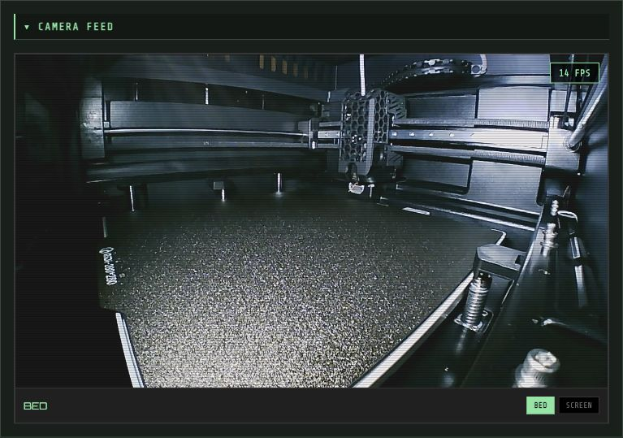
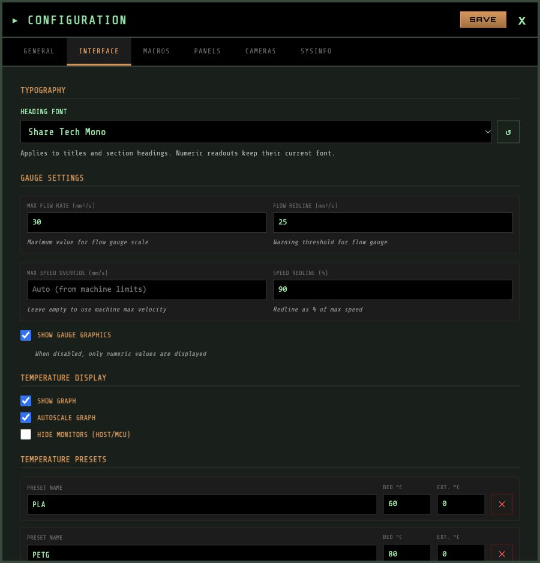

Motion controls
Jog an axis or enter an absolute position. Homing and motor indicators reflect the printer’s state, with travel limits checked before a move.
curl -sSL https://justinh-rahb.github.io/retrograde/install.sh | bashDownloads the latest release. Run it again to update. Installation guide ↗
V2.1 · KLIPPER / MOONRAKER
Control your printer, monitor temperatures and cameras, manage files, and switch between Moonraker hosts.
Self-hosted · Svelte · MIT license

01Live printer statusLive readings and clear feedback.
02Dashboard layoutCollapsible, rearrangeable panels.
03Per-printer settingsPreferences stored with your printer.
FEATURES
Motion, temperatures, cameras, macros and connection management in one dashboard.
Jog an axis or enter an absolute position. Homing and motor indicators reflect the printer’s state, with travel limits checked before a move.
MJPEG streams run through a worker. Camera traffic stops when the panel is collapsed, off-screen or in a hidden tab.
View heaters, chamber sensors, fan speeds and temperature graphs. Set targets numerically and hide system monitors separately.
Rearrange and collapse panels. Group frequently used macros into custom panels.
Switch between Moonraker hosts without mixing up their settings. Printer and interface preferences sync through each host’s Moonraker database.
Automatic reconnects after connection loss or device sleep. Local settings caches keep your setup available when the printer isn’t.
NEW IN 2.1
Appears automatically when the connected printer exposes AFC. Turn it off under Settings → Panels.

See filament colours, materials, tool mappings and prep/load/tool/hub sensors. Only lanes advertised by AFC are displayed; internal drive and selector mechanisms stay hidden.
Load, unload, eject, edit filament data and assign tools or runout backups when the printer advertises those commands. Toolchanger status and selection are included.
Movement actions require confirmation and a fresh idle/ready check. Commands are never replayed after a timeout or reconnect. Layout and visibility preferences are saved per printer.
Screenshot: live Snapmaker U1 AFC-Lite status, captured read-only. AFC documentation ↗
THE INTERFACE
Captured from a Qidi Q2C. Open any screenshot to browse at full size. The AFC example above uses the U1.

Browse G-code with model thumbnails, slicer estimates and filament usage.

Review completed and failed jobs, actual print times and filament consumption.

Axis positions, homing indicators, jog controls and speed adjustment.

Heater targets, chamber readings and temperature history together.

Monitor the build plate with optional scanlines and automatic stream suspension.

Choose heading fonts, gauges and display options for each printer.
GET STARTED
Use the installer above, download a release, or build from source. Retrograde is a static frontend that connects to Moonraker.
Build deployable files from the dev branch. This command creates dist/; it does not start a server.
git clone --branch dev https://github.com/justinh-rahb/retrograde.git
cd retrograde
npm ci
npm run buildFor local development, run npm run dev after npm ci and open the URL printed in the terminal. For deployment, serve dist/ with your web server. Full installation guide ↗
Download the latest release archive and serve its contents with your web server. The installer above can also configure nginx.
Flight v2 is the default in v2.0.0 and newer. See release notes and older versions ↗.
Bundle a settings export for new hosts, or choose the original theme. Existing user preferences take precedence.
docker build --build-arg DEFAULT_SETTINGS_FILE=printer-defaults.json -t retrograde .
# Original v1 theme: add --build-arg APP_THEME=retroRun the release installer again to update. It reuses installations under the former retro-cnc-panel name. To remove an installer-managed setup:
curl -sSL https://justinh-rahb.github.io/retrograde/install.sh | bash -s -- --uninstallGITHUB